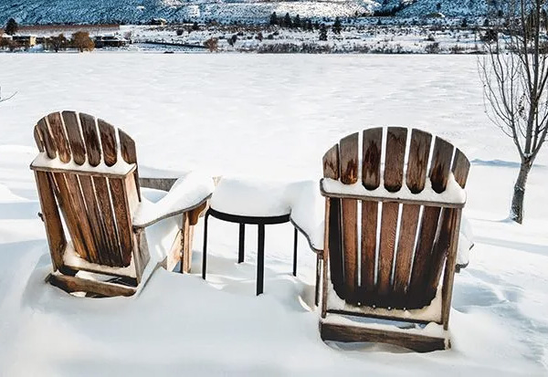

About Teak
What is teak?
Teak (Tectona Grandis) is a deciduous tree that grows in Southeast Asia. It can reach a height of 150 feet in 50 years. Teak grows well in the dry, hilly terrain of Indonesia where it has been farmed on plantations since the 1800′s. The teak industry in Indonesia provides employment for hundreds of thousands of people.
Why is teak the best choice for outdoor furniture?
Teak wood is heavy, durable, and won’t splinter. It is very dense and has a high concentration of natural oils, making it resistant to rotting. The beauty, longevity and low maintenance of teak furniture make it a luxury and a good investment. Good quality teak furniture lasts a lifetime — an average of 75 years!
Teak trees on a farm
Why is some teak furniture more expensive?
Grade-A teak comes from trees that are at least 45 years old. Older teak trees have a higher concentration of oil that protects the wood and makes it more durable. Some teak furniture is made from teak trees less than 15 years old. It is not as expensive, but water can penetrate the wood causing it to fall apart in as little as two years. An easy way to tell the difference is Grade-A teak is much heavier than lower quality teak.
At Teak Boutique we sell high quality Grade-A teak garden furniture that is designed and built by skilled crafts people in Indonesia. The wood is kiln dried to reduce the moisture content, preventing the furniture from splitting or warping when left outdoors. Each piece of furniture is made using mortise and tenon joinery, not metal screws or bolts which can loosen or rust away (a mortise is a square hole and a tenon is a square piece of wood that fits into the mortise).
Environmentally responsible
We believe in protecting the environment. All our teak comes from plantations supervised by Perum Perhutani, a teak management and conservation division of the Indonesian Government. For every teak tree that is cut down, two more are planted and they limit the total number of trees that can be cut down each year. With an average lifespan of 75 years, teak furniture does not need to be replaced as often as other types of outdoor furniture.
What maintenance does teak need?
A yearly cleaning with a mild soap such as Dove or Simply Green, warm water and a gentle brush is the only maintenance teak furniture needs. We suggest that you use Orange Lustre to clean oiled or stained teak furniture. Use Oxy-Clean if mold appears. Do not power wash your teak furniture since it can ruin the grain. Bird droppings, sap or food stains can be treated with K2R spot remover or gently sanded out.
All wood may develop slight cracks (known as “checking”) on the edges of the furniture due to the natural expansion and contraction of the wood. Checking has no effect on the stability or structural integrity of the furniture and the cracks will eventually even out. Water spots or other discoloration may appear, but they will fade into a uniform silver colour over time.

Teak can survive the harsh Canadian winters outdoors. It does not have to be sealed, stained, or finished. We recommend covering teak outdoor furniture with a waterproof cover in the winter to help it last even longer.
Shades of teak: aged, natural, oiled
Does teak furniture need to be oiled or stained?
Our teak garden furniture comes in its natural blond colour which gradually turns to a beautiful silvery grey if left outside. Teak “protects” itself — no oiling or staining is necessary.
If you decide to oil or stain teak that is used outdoors, you will need to repeat the process regularly — before it begins to turn silver. Clean your teak furniture and let it dry for 24 to 48 hours before re-finishing it. We recommend Sikkens Cetol 1 if you wish to oil your furniture.
If you have purchased teak furniture that was not kiln dried from another store it may develop a fungus and turn black. Use Feron’s Wood Britener followed by a rinse of equal parts vinegar and water.